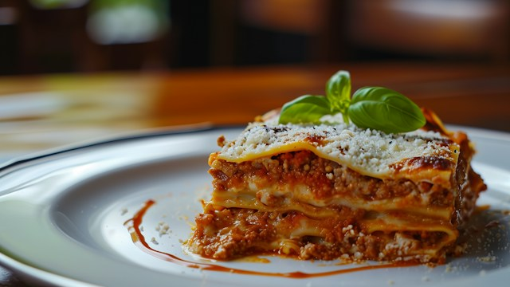

Lasagna

Back to Home
Description
Lasagna is a classic Italian dish made with layers of pasta, meat sauce, and cheese. It's a hearty and comforting meal that's perfect for family dinners or special occasions.
In this recipe, we'll guide you through the steps to create a delicious lasagna from scratch, including making the meat sauce and assembling the layers.
Ingredients
- 12 lasagna noodles
- 1 pound ground beef
- 1 onion, chopped
- 2 cloves garlic, minced
- 1 (24-ounce) jar marinara sauce
- 1 (15-ounce) container ricotta cheese
- 2 cups shredded mozzarella cheese
- 1/2 cup grated Parmesan cheese
- 2 tablespoons olive oil
- Salt and pepper to taste
Steps
- Preheat your oven to 375°F (190°C).
- Cook the lasagna noodles according to the package instructions. Drain and set aside.
- In a large skillet, heat olive oil over medium heat. Add chopped onion and minced garlic, and sauté until softened.
- Add ground beef to the skillet and cook until browned. Drain excess fat.
- Stir in marinara sauce, salt, and pepper. Simmer for 10-15 minutes.
- In a separate bowl, mix ricotta cheese with a pinch of salt and pepper.
- In a baking dish, spread a layer of meat sauce, followed by a layer of lasagna noodles, then a layer of ricotta cheese, and a layer of mozzarella cheese. Repeat the layers until all ingredients are used, finishing with a layer of meat sauce and mozzarella cheese on top.
- Sprinkle grated Parmesan cheese over the top.
- Cover with aluminum foil and bake for 25 minutes. Remove the foil and bake for an additional 20 minutes or until the cheese is bubbly and golden brown.
- Let the lasagna rest for 10 minutes before serving. Enjoy!